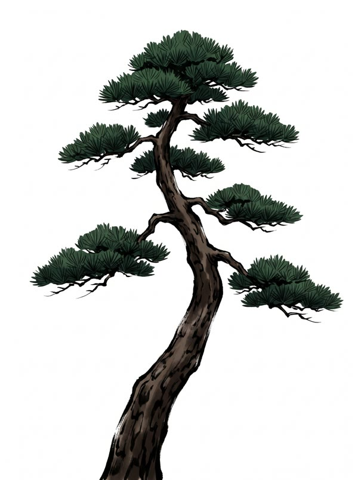

屋号、名刺に入る 職人の技で「縦に書けばよい」と判明
創業2日目 松だより編集部
この記事は 約5,620字。読み終わるまで 約13分（親方の談話をふくむ）

長すぎて看板に入らなかった屋号「松之助松太郎」が、名刺には入った。決め手は「縦に書く」という職人の技だった。文字を小さくする案は、親方が「松は縮めない」として退けていた。
01看板に入らなかった日
ことの始まりは創業の日。看板に屋号を書いたところ、「松之助松太」まで書いて板が終わった。最後の「郎」は、となりの壁に書いてある。注1
このため通りからは「松之助松太」の店に見える。親方は「郎は心の中にある」としているが、郵便は今のところ届いていない。注2
02名刺でも同じ問題
名刺を作る段になって、同じ問題が起きた。横に書くと、屋号だけで紙の幅を使い切り、肩書きも連絡先も入らない。注3
「文字を小さくしては」との案に、親方は首を横に振った。「松は縮めない」。屋号の中に松が2つあるため、2倍縮めたくないという。注4
03縦に書く、という発見
行きづまった空気を破ったのは、いちばん若い職人のひとことだった。「縦に書けばいいのでは」。名刺は横に長いが、文字は縦に並べられる。注5
試したところ、六文字はきれいに一列におさまった。親方は名刺を松にかざし、「松と同じだ。上にのびればよい」とうなずいたという。注6
04残る課題
名刺は入ったが、看板はそのままである。縦に書き直す案は出ているが、板を縦にすると今度は店の屋根より高くなる。注7
連絡先の欄には「電話 松の下から大声で」と刷られた。電話の線は、まだ引かれていない。名刺を渡す相手も、今のところ向かいのご隠居だけである。注8
表屋号の入りぐあい
| 看板（横書き） | 「松之助松太」まで。「郎」は壁 |
|---|---|
| 名刺（横書き） | 屋号だけで満員 |
| 名刺（小さい字） | 親方が却下 |
| 名刺（縦書き） | 入った |
| 看板（縦書き） | 屋根より高くなるため検討中 |
声えらい人の見方
名刺を1枚もらった。縦に読めばいいと分かるまで、少しかかった
入らないなら、入るように立てる。松もそうして立っている
流これまでの流れ
- 創業の日看板、「郎」が入らず壁へ
- 同日名刺、横書きで行きづまる
- 同日小さい字の案、却下
- 2日目若い職人「縦に書けば」
- 直後六文字、一列におさまる
- 現在配った名刺は1枚
辞ことばの説明
- 松
- 木。当店が扱う、ただ一つの物。くわしくは職人会議で話し合い中（結論は出ていない）。
- 松ぼっくり
- 松になる丸い物。店先では「ご自由にどうぞ」。当店の見積りのお金の単位でもある。
- 松ぼっくり建て
- 値段を松ぼっくりの数で表すやり方。両替はできない。
- はしご
- よくなくなる道具。探していない時に出てくる。
- 親方
- 松之助 松太郎。松を見ている人。
- たま
- 隣の家の猫。松に登れるが、降りられない。本紙の取材に「にゃー」で応じる。
- 創業
- きのう。
- 松が見えるあいだ
- 当店の営業時間。日の出から、暗くて松が見えなくなるまで。
談親方の談話（全文）
この件について、親方が本紙に語った内容を、けずらずにのせる。
松、だな。松。松。松。松。松。……松。松、だな。……松。松。松。松。松。松。松。松だ。やはり松。松である。松。松。松なのだ。松。松なのだ。松、だな。……松。松。松なのだ。つまり松。松なのだ。（11秒の沈黙）松、松。松なのだ。（うなずく）松だ。松。松である。松である。（遠くを見る。松である）松、だな。松なのだ。つまり松。松、だな。松。松である。松だ。松なのだ。松。やはり松。松。松。松。
松。つまり松。松なのだ。松、松。松なのだ。松。松、だな。松。松。松。松、松。松、だな。松、だな。松だ。（はしごを探す声が聞こえる）松なのだ。松である。……松。……松。松。松。松、松。松、松。松、だな。松。松。松、松。松。松。松。松。……松。やはり松。つまり松。松。松。やはり松。松。松、だな。……松。松だ。つまり松。……松。松、だな。
松なのだ。やはり松。松なのだ。松。松、松。つまり松。松。松。松。松。松。松。松。松。松だ。松。松。松。松。松。松なのだ。やはり松。松、松。つまり松。松である。……松。松。松。松、松。松なのだ。松なのだ。……松。つまり松。松。松。松。松。やはり松。つまり松。松。……松。松、だな。松、だな。松、だな。つまり松。松なのだ。つまり松。松、だな。（松葉を1本、えりから出す）松だ。つまり松。松、松。松。やはり松。松。松。松。松、だな。
松である。……松。松。松、松。松だ。松。松。松。……松。……松。松。松。……松。松なのだ。つまり松。（ここで日がかたむく）松なのだ。松。松。松。松。（職人、お茶を出す）松、松。松、だな。松、松。やはり松。松である。松。松である。松だ。松だ。松。松。松。（11秒の沈黙）松、松。松である。松である。松、松。松である。つまり松。松、だな。松。やはり松。つまり松。松だ。松。松。松。松である。松なのだ。……松。松。松である。
松。松なのだ。やはり松。やはり松。（遠くを見る。松である）松。松、だな。松、だな。松なのだ。……松。（ここで親方、松を見る）つまり松。松。松。松。松。松。松。松。……松。やはり松。松、だな。松。つまり松。松。松。松。松なのだ。つまり松。松。松。松。松である。松なのだ。つまり松。松。松だ。やはり松。松なのだ。つまり松。（うなずく）松。松なのだ。松、だな。（ここで日がかたむく）松。松。……松。つまり松。松。松。松。松だ。……松。松だ。松。（記者、すわり直す）
松、だな。松なのだ。松。松。松。松、だな。つまり松。松。松、だな。松なのだ。松、だな。松。松だ。松だ。松である。松。松なのだ。松。松。松。松。松。松。（職人、お茶を出す）松。松。（ここで日がかたむく）松。松。松。やはり松。松。松。松。松だ。松。つまり松。松である。（ここで日がかたむく）つまり松。松。松である。つまり松。やはり松。松。松。松。松、だな。松。松。松。松。
松、松。松。松、だな。松だ。松。松。松。松。松。松なのだ。松。松。松。松、だな。松。松。松、松。（松葉を1本、えりから出す）松。松なのだ。松。松。松、松。（11秒の沈黙）つまり松。松である。松なのだ。松、だな。松。松。松。松。松。松である。松、松。松だ。松、だな。松である。（ここで親方、松を見る）松。（ここで日がかたむく）松。松。やはり松。松である。松。つまり松。松なのだ。……松。松。つまり松。松。松。松。松。やはり松。松、だな。松なのだ。
松。松。松。つまり松。松である。松。松。松。松。……松。松、だな。松、だな。松。松。松。松。松。松。松なのだ。やはり松。やはり松。つまり松。松だ。松、だな。松。松。松、だな。松。松。つまり松。松。松、松。松だ。松。松、松。松。松。……松。松なのだ。松。（記者、すわり直す）松だ。松。……松。やはり松。やはり松。松、松。
松。松なのだ。松だ。松。松。松。松なのだ。松なのだ。つまり松。松。松。松。松。松。やはり松。松なのだ。松なのだ。松。松。松。松。（ここで親方、松を見る）松。松なのだ。松。松、松。つまり松。松である。松、松。松、松。松、松。（猫が横切る）松、だな。松。（ここで日がかたむく）松、だな。やはり松。松なのだ。松、だな。松、松。松である。松。
つまり松。松。（記者、すわり直す）松、松。……松。松なのだ。松、松。松である。松、松。（ここで親方、松を見る）……松。松。松。……松。……松。松、松。松。やはり松。やはり松。松。松。松。……松。松である。松。松。松。松。松。松。松。松である。……松。松。松。……松。松だ。松。松。つまり松。松。松。松。松なのだ。松である。……松。松、松。松だ。……松。松、松。松だ。松なのだ。松である。松。松。松。松だ。松。
……松。松。松、松。つまり松。松だ。松である。松。松。松。松。松、松。松だ。松。松。松、松。松。松。つまり松。松なのだ。松。やはり松。松。松。松。松。（はしごを探す声が聞こえる）松。やはり松。松。やはり松。松。松。松。松。松である。……松。……松。（記者、すわり直す）松。松だ。松。松。松、松。松である。松である。松なのだ。松。松、松。松。（はしごを探す声が聞こえる）松。
松。松。松。松、松。（ここで親方、松を見る）松なのだ。松。松。松。松である。松なのだ。松。松。松。松なのだ。……松。……松。（猫が横切る）松だ。つまり松。……松。松、だな。つまり松。松だ。松、だな。松だ。松、だな。松なのだ。松。……松。松。松。松。松。松。松。松。（職人、お茶を出す）松。松。松。松。松、だな。やはり松。松。松。松。松。松だ。松、だな。松である。（ここで日がかたむく）
松。松。松。やはり松。（職人、お茶を出す）やはり松。松である。松。やはり松。松。松。松。松。松。松だ。松、だな。松である。松である。松。松。松。松だ。つまり松。松だ。（松葉を1本、えりから出す）松なのだ。……松。つまり松。（うなずく）松である。松なのだ。松。松。松。つまり松。松である。松なのだ。つまり松。松、松。つまり松。松、だな。松。松。松。つまり松。松。松。松。松。……松。松である。松。やはり松。松なのだ。松だ。松なのだ。やはり松。松なのだ。松。松。松。
松である。松、松。松、松。（猫が横切る）松。松なのだ。……松。やはり松。松。松、松。……松。松なのだ。松。松。松。松。つまり松。松。松。（うなずく）松。松。松。松。松。松。松。つまり松。（猫が横切る）松、松。松、だな。やはり松。やはり松。……松。つまり松。松、松。つまり松。つまり松。松、だな。松である。（11秒の沈黙）松。松。松。（松葉を1本、えりから出す）松である。松なのだ。松、だな。松。松、だな。松。松。やはり松。松、松。松である。松。松なのだ。松である。……松。松、松。松、だな。
つまり松。松。松。（職人、お茶を出す）松。松、だな。松。松である。（11秒の沈黙）松である。松。松。松である。松。松、松。松である。松である。松。松。松。松。松だ。松。松。松。松。松。松。松。松。松。松、だな。松、だな。（松葉を1本、えりから出す）松だ。つまり松。（職人、お茶を出す）松。松。松。松である。松なのだ。松、松。松なのだ。松なのだ。松。松。松。松なのだ。松。松。松、だな。松。松。松なのだ。松なのだ。松、松。松なのだ。松だ。松。松。……松。松。
松。……松。松、松。松。松。松。松。松。やはり松。松。松なのだ。松、だな。……松。松。松。松。松。松。松だ。松。やはり松。松。松、松。（うなずく）松なのだ。松、だな。松だ。松。松。松。松、だな。松。やはり松。松。松だ。松、だな。……松。松、だな。松である。松、だな。松。松、松。松だ。松なのだ。……松。松。松。松。松。松。松、だな。松。松。松。つまり松。
以上である。……松。
注注
- 戻らなくてもよい。松である。
- 松である。
- 本紙調べ。調べたのは、きのうである。
- 親方による。親方は松を見ながら答えた。
- 職人の証言による。証言は2通りあった。
- 猫の発言は、本紙による訳である。合っている保証はない。
- 「長年」は、きのうからの意。
- 数字は、指で数えた。
- この注は、とくに意味はない。松である。
- 注1を参照。
- 注9を参照。
- ここまで注を読んだ方は、本文に戻ってほしい。
訂訂正とおわび
「職人の技」とありますが、思いつきです。 おわびして訂正します。なお、松については訂正はありません。
ここまで読んだのは、親方をのぞくと、あなたが初めてです。お礼に、店先の松ぼっくりをご自由にどうぞ（もともと、ご自由にどうぞの品です）。
この記事を LINE で送る まだ読める方は、次の記事へ：松之助松太郎「松しか扱わない」と宣言 梅と竹は「他をあたって」